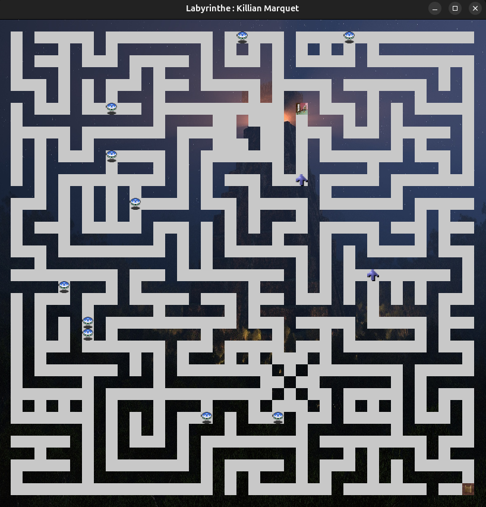

Labyrinthe (Java / JavaFX)


Projet Java centré sur la création d’un labyrinthe interactif multi-étages. L’objectif était de développer progressivement un jeu complet : lecture des étages depuis des fichiers, affichage graphique avec JavaFX, gestion des déplacements du héros et intégration de monstres contrôlés par différentes logiques.
Le projet m’a permis d’implémenter les règles du labyrinthe, gerer des tests unitaires et la gestion d’erreurs.
Fonctionnalités développées
- Chargement et affichage des étages du labyrinthe (JavaFX).
- Déplacement du héros et gestion des salles accessibles.
- Ajout de monstres (polymorphisme) et déplacements autonomes.
- Tests unitaires
- Animations, déplacement fluide et système d’éclairage autour du joueur.
- Calculs de plus courts chemins (Algorithme de dijkstra)
Technologies
Java, JavaFX, JUnit, JGraphT, Git.